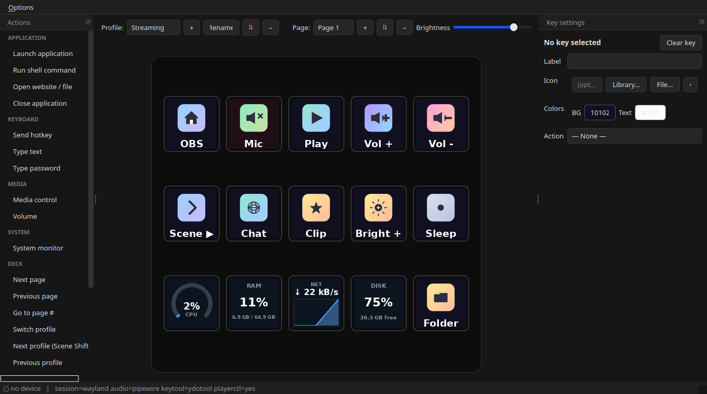

Install
Snap (Ubuntu App Center)
sudo snap install fifine-control-deck
apt (Launchpad PPA)
sudo add-apt-repository ppa:zoutmax/fifine sudo apt update sudo apt install fifine-control-deck
Works on Debian/Ubuntu-family distros for amd64 and arm64
(Raspberry Pi included). You must be in the plugdev group; the packages install the
udev rule and helper tools automatically.
The device & the app


Features
- Live per-key icons, labels & colours (and animated GIF keys)
- Drag-and-drop actions catalog
- Launch apps, hotkeys, type text, run scripts
- Media, volume & brightness control
- Multiple profiles & pages
- Folders (nested key-sets) & multi-step macros
- Knob/dial support (press / rotate)
- Hotplug-aware; optional autostart on login